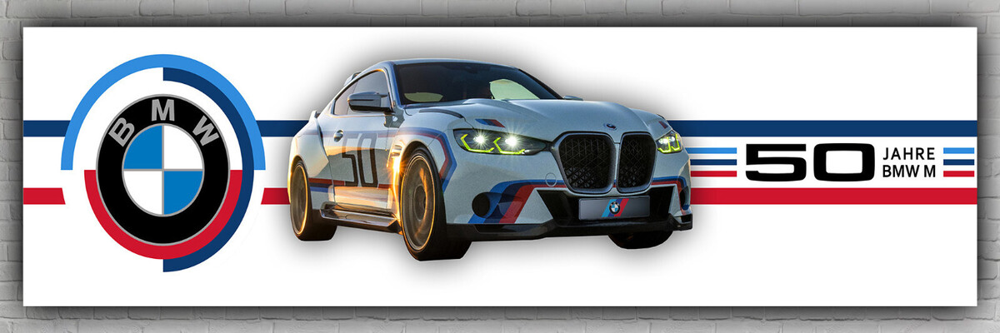
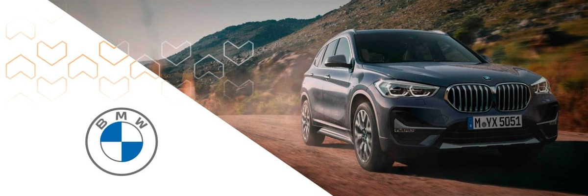

- 

- 


Estreou em 1972, como sucessora da "Nova Classe". A BMW Série 5 criou o segmento dos sedãs
executivos esportivos, oferecendo conforto, luxo e desempenho em um pacote equilibrado.
A Série 5 se destacou pela inovação: foi pioneira em segurança, com zonas de deformação, e tecnologias
como controle de estabilidade e sistemas de assistência ao motorista.
Além das versões tradicionais, abriga também o lendário M5, sedã de alto desempenho que define a
categoria dos super sedãs.